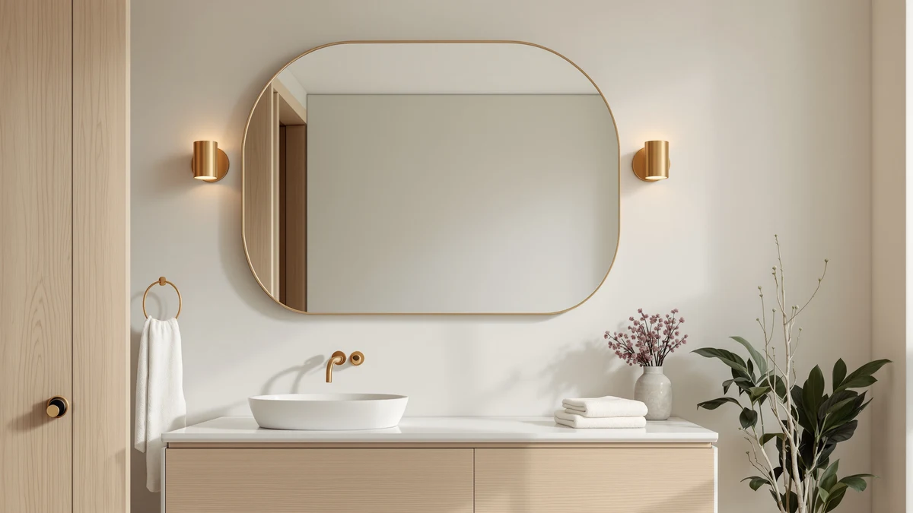

Things to Know Before You Buy
- Steam is the main culprit. Hot showers coat the glass in a fine water film, and that film dries into spots unless you wipe it down within a few minutes.
- Vinegar outperforms most glass sprays on hard water rings, because its acidity dissolves mineral buildup that ammonia-based cleaners tend to smear instead of remove.
- The cloth matters as much as the cleaner. Microfiber and newspaper leave no lint, while cotton towels and paper towels almost always leave streaks.
- A 30-second daily wipe beats a monthly deep clean. Keeping bathroom mirrors clean is easier when you catch toothpaste splatter and hairspray residue before they dry hard.
- Anti-fog coatings cut your workload. A sealant or anti-fog spray stops water from clinging to the glass, so you clean the mirror less often overall.
How to keep bathroom mirrors clean comes down to breaking one habit: wiping a wet mirror with whatever towel sits closest, then leaving streaks, lint, and hard water spots behind. You deal with more abuse on a bathroom mirror than on almost any other surface in the house. A hot shower fogs the glass, toothpaste splatters near the sink, and hairspray drifts across the frame most mornings. Hard water from the faucet adds pale mineral rings, and those rings build layer on layer until a basic wipe stops working.
The fix is a short, repeatable routine instead of an occasional deep scrub. We researched the cleaning chemistry behind mineral deposits and soap film, and we compared the methods professional cleaners and verified owner reviews recommend for mirrored glass. The five steps below take about 20 minutes and use supplies most people already keep under the sink. Follow them in order, and your mirror stays clear for weeks instead of days.
What You'll Need
- Supplies: white vinegar, distilled water, and a few drops of dish soap
- Tools: a microfiber cloth and a spray bottle
Step 1: Clear the counter and dust the frame
Start by moving toothbrush holders, soap dispensers, and anything else sitting in front of the mirror out of the way. You need full access to the glass, and clutter on the counter tends to catch overspray and make the job take longer than it should.
Next, run a dry microfiber cloth around the frame, corners, and edges where the glass meets the wall or cabinet. Dust mixed with hairspray or bathroom humidity turns into a sticky film, and wiping it away dry now keeps that film from smearing into the glass once you start spraying cleaner.
Step 2: Mix a vinegar and water solution
Fill a spray bottle with equal parts white vinegar and distilled water. Tap water works too, but distilled water skips the minerals that cause the spots you're trying to remove in the first place, so your results last longer between cleanings.
For mirrors with heavy soap scum or makeup residue, add a drop or two of dish soap to the mix. The soap breaks down oily residue that vinegar alone leaves behind, and it rinses away clean without leaving a film if you wipe it off thoroughly in the next step.
Step 3: Spray the glass and let it sit
Hold the spray bottle about a foot from the glass and mist it evenly from top to bottom. Avoid soaking the frame, especially on wood-framed mirrors, where standing liquid can seep into seams and warp the finish over time.
Give the solution roughly 60 seconds to sit on the glass before you wipe. That short dwell time lets the vinegar dissolve toothpaste residue and hard water spots instead of pushing them around, which is the main reason a quick spray-and-wipe often fails to keep bathroom mirrors clean for more than a day.
Step 4: Wipe top to bottom with a microfiber cloth
Work in straight lines from the top of the mirror down, rather than in circles. Circular wiping tends to redistribute residue across the glass, while straight, overlapping strokes push it toward the bottom edge where you can catch it with a final pass.
Flip the cloth to a dry section every few strokes. A cloth that's already saturated with vinegar solution smears liquid around instead of lifting it, and that's usually what causes the faint streaks you still see after the glass looks dry.
Step 5: Buff the edges and build a quick maintenance habit
Finish by buffing the corners and the strip along the bottom edge, where drips collect and dry into the stubbornest spots. A folded dry corner of the microfiber cloth gets into these tight areas better than a flat pass across the main surface.
Once the mirror is clear, keep a small squeegee or a spare cloth near the shower and run it across the glass right after you shower. That 30-second habit is what actually keeps bathroom mirrors clean long-term, since it stops water spots from setting before they have a chance to dry.
Common Mistakes to Avoid
The most common mistake is grabbing a bath towel or paper towel instead of a microfiber cloth. Both shed lint and fibers, and the lint sticks to the fine streaks your eye otherwise wouldn't register, making the mirror look dirtier right after you clean it than before you started.
Using too much cleaner is another frequent error. A heavy spray leaves excess liquid pooling at the bottom edge of the frame, and that pooled liquid seeps into wood or MDF frames over months and causes the finish to bubble or peel. A light, even mist does the same job without the risk.
Skipping the dwell time rushes the chemistry. If you spray and wipe in the same motion, the vinegar never gets a chance to dissolve mineral deposits, and you end up scrubbing harder to get the same result a 60-second wait would have delivered for free.
Wiping in circles instead of straight lines is a smaller mistake with an outsized effect: circular strokes smear residue evenly across the glass rather than pushing it toward one edge, which is why a circular wipe-down often leaves a faint haze under certain lighting.
Finally, skipping the daily post-shower wipe forces you to repeat the full routine every week instead of every month. Keeping bathroom mirrors clean takes far less effort when you catch water spots the day they form rather than after they've had weeks to set into the glass.
Our Top Picks
If your current mirror is too scratched or clouded to stay clean no matter how often you wipe it down, replacing it is often faster than fighting the glass. These three picks cover the most common bathroom setups: a metal frame, a budget wood frame, and a frameless arched design, and each one is easier to keep clean than a mirror with a degraded coating.

Editor's Pick
TETOTE Brushed Nickel Mirror 20
A straightforward brushed nickel frame that owners describe as easy to wipe down, since the metal edge doesn't trap moisture the way wood frames do.
$54.99
Check Price on Amazon
Best Value
AAZZKANG Wall Mirror Black Wood
The lowest price in this group, with a sealed wood frame that verified buyers say resists the warping that unsealed frames develop near a sink.
$19.99
Check Price on Amazon
Premium Choice
HARRITPURE 20"x30" Arched Bathroom Mirror
An arched frameless design with no seams along the edges, which reviewers note makes it faster to wipe clean than mirrors with a raised metal lip.
$39.99
Check Price on AmazonFrequently Asked Questions
What's the best homemade cleaner for bathroom mirrors?
An equal mix of white vinegar and distilled water handles most bathroom mirror buildup without leaving the haze some ammonia-based sprays leave behind. For mirrors with heavy makeup or soap scum residue, add a drop of dish soap to the mix, then rinse with a second, water-only pass before the final dry wipe.
How often should you clean a bathroom mirror?
A full clean once a week keeps most bathroom mirrors clear, provided you wipe down water droplets after each shower in between. Households with hard water or more than one person sharing the bathroom usually need the full vinegar routine every four to five days instead.
Why does my bathroom mirror still streak after I clean it?
Streaks almost always come from a saturated cloth or leftover lint rather than from the cleaner itself. Switch to a dry section of microfiber cloth partway through the wipe, and skip paper towels and cotton towels entirely, since both shed fibers that catch the light and look like streaks.
Does rubbing alcohol work on bathroom mirrors?
Yes, isopropyl alcohol cuts through hairspray residue and fingerprints that vinegar sometimes struggles with, and it evaporates fast enough to leave almost no streaking on its own. Avoid alcohol on mirrors with a painted or antique-finish frame, since repeated contact can dull the finish over time.
How do you stop a bathroom mirror from fogging up?
A thin coat of shaving cream wiped on and buffed off creates a temporary anti-fog layer that lasts through a few showers before you need to reapply it. For a longer-term fix, a dedicated anti-fog spray or a small adhesive demister pad keeps the glass clear and makes it easier to keep bathroom mirrors clean, since less condensation means fewer water spots.
Verdict
How to keep bathroom mirrors clean isn't complicated once you have the right supplies and a repeatable order of steps. A vinegar and water solution, a microfiber cloth, and sixty seconds of dwell time handle hard water spots and soap scum that a quick dry wipe never touches. The habit that matters most happens after you've finished the deep clean: a 30-second wipe-down right after every shower, which keeps water spots from setting in the first place and stretches the time between full cleanings from days to weeks.
If your mirror has reached the point where scratches or a clouded coating make it impossible to get fully clear no matter how carefully you clean it, replacing the glass is the more practical fix. The TETOTE Brushed Nickel Mirror is our top pick among the options above for exactly that reason: its metal frame doesn't trap moisture the way wood does, so it stays easier to wipe down and keep clean over years of daily bathroom use.